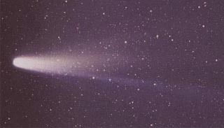
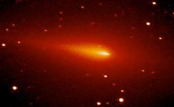

Comets
Comets are small asteroid-like bodies when they are far from the Sun, traveling in highly ellipical orbits about the Sun. When they sweep in close to the Sun, dramatic changes occur as they brighten and develop an extended tail. The nucleus is widely described as a "dirty snowball" composed of ice and some rocky debris.
|

|
There is considerable vaporization as they approach the Sun and they develop ion tails and dust tails. The ion tails are almost straight streamers from the nucleus while the usually brighter dust tails are broad and diffuse and curve slightly, lagging behind the radial direction. |
The lighter ionized gas atoms of the ion tale cause it to point outward, directly away from the Sun, because the influence of the solar wind is dominant. I take the lower, more focused part of the tail in the image above to be the ion tail. The dust tail is made up of more massive particles and the role of gravity is important. If particles influenced by gravity are moved to an orbit further from the Sun, their radial direction falls behind that of the nucleus of the comet because their orbital period will be longer. The upper part of the Halley image would then appear to be the dust tail - you can see a slight curvature. In its most visible phase close to the Sun, the comet has a small solid nucleus and a ball of gas around it called the coma. Comas have been found to be on the order of 100,000 km in diameter at their maximum size, comparable to the largest planets. Most aof the light reflection is from the coma. Surrounding the coma and the visible tails is a hydrogen envelope which may extend millions of kilometers. The light from comets is purely reflected light; like the planets, the comets produce no light of their own.
Current models of the nuclei of comets view them as balls of loosely packed ices, a cold mixture containing gas and dust. The dust is thought to be trapped in a mixture of methane, ammonia, and water ice. The smaller moons of the outer solar system are similar in constitution. Since they spend most of their time far from the Sun, their temperatures are thought to be a few tens of kelvins. Chaisson & McMillan suggest a core temperature of 200K and a surface temperature on the order of 350K for Halley when it made its close approach to the Sun.
The short-period comets (less than 200 years) are thought to originate in a region of the solar system out past the orbit of Neptune called the Kuiper belt (30 to 100 AU). Most of them are found to have prograde orbits (in the same orbital direction as the planets) and to be close to the ecliptic plane. The Kuiper belt is described as a region of asteroid-like comets, most of which travel in roughly circular orbits. It may be that occasional close encounters between comets or the cumulative gravitational pull of the outer planets brings one into the higly elliptical orbit which brings it close to the Sun.
Other comets, characterized as "long-period comets", are found in random orientations with respect to the ecliptic plane. They are thought to originate in a large "cloud" of objects in a region perhaps 50,000 AU from the Sun called the Oort cloud.
|  | This image of comet Schwassmann-Wachmann 3 taken by Tim Puckett of Villa Rica, Ga. USA. It was obtained with a 12" Lx200 working at f/7. This is a 300 second exposure taken on 12-01-95 . |
While the most famous comet is Halley's Comet, some interesting recent encounters have been with comet Giacobini-Zinner and the impact of comet Shoemaker-Levy 9 on Jupiter.
 | Comet Links | http://nssdc.gsfc.nasa.gov/photo_gallery/photogallery-comets.html |
| http://enchke.jpl.nasa.gov | ||
| http://comets.amsmeteors.org |
Solar System Illustration
Solar System Concepts
Reference
Chaisson & McMillan,
Ch 14.
| HyperPhysics********** Astrophysics | R Nave |